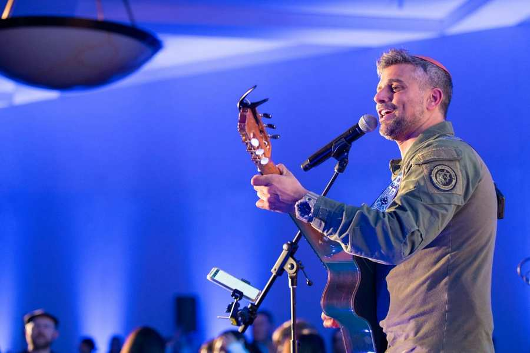
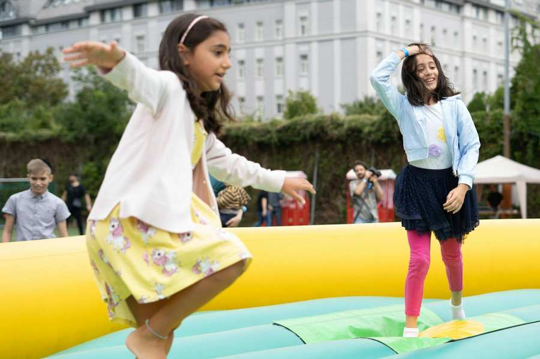
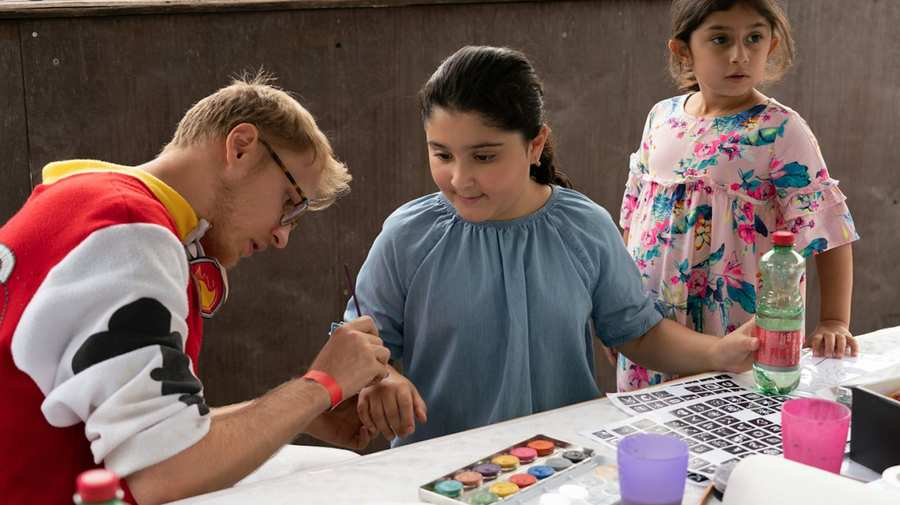
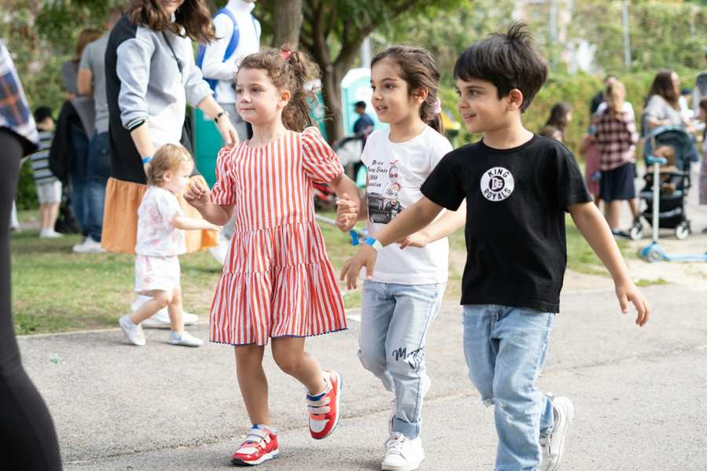

Veranstaltungsinfos
Zeit: 08.09.2024, 12:30 - 17:00
Ort: ZPC Innenhof/S.C. HAKOAH Outdoor BereichZum Kalender hinzufügen

©Kruter
Die IKG.Jugend veranstaltet nach den Sommerferien und als Start ins neue Schuljahr das Familienfest. Dieses besondere Event lädt die ganze Gemeinde zu einem Tag voller Freude, Spaß und Gemeinschaft ein. Erleben Sie einen unvergesslichen Tag mit zahlreichen Attraktionen und Spielstationen für Kinder. Von Kinderschminken bis zu spannenden sportlichen Aktivitäten ist für jedes Alter etwas dabei.



Datum: 08.09.2024
Uhrzeit: 12:30-17:00/Einlass 12:00
Ort: ZPC Innenhof/S.C. HAKOAH Outdoor Bereich
(Eingang über ZPC, Simon-Wiesenthal-Gasse 3, 1020 Wien)
Programm:
- Attraktionen und Spielstationen für Kinder: Jede Menge Spaß und Unterhaltung für unsere kleinen Gäste.
- Kinderschminken: Kreative Schminkaktionen, die Kinderherzen höherschlagen lassen.
- Sportliche Aktivitäten: Mitmach-Aktionen und sportliche Herausforderungen für Groß und Klein.
- Koschere Kulinarik: Genießen Sie köstliche Speisen und Getränke.
- Tombola: Coole Preise und Geschenke
SPECIAL ACT:
Freuen Sie sich auf einen exklusiven Auftritt um 14:00 und 15:30 mit Noam Buskila, der mit seiner Musik für besondere Stimmung sorgen wird.
Seien Sie dabei und verbringen Sie einen wundervollen Tag mit Ihrer Familie und Freunden.
Wir freuen uns auf Ihre Teilnahme!
Desweiteren wollen wir Sie informieren, dass der Pool an diesem Tag aus Sicherheitsgründen geschlossen sein wird. Wir bitten um Verständnis!
Eintritt frei!
Kommen Sie vorbei und feiern Sie mit uns!
Aus Sicherheitsgründen bitten wir, einen gültigen Lichtbildausweis mitzuführen!
Des Weiteren machen wir darauf aufmerksam, dass die Zutrittsberechtigung der
Sicherheit obliegt.